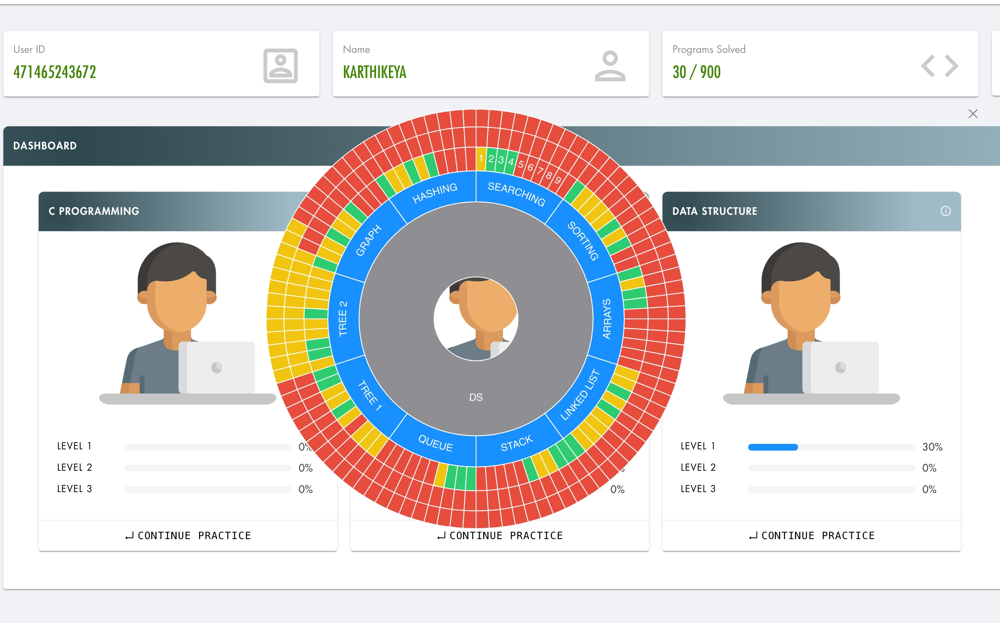
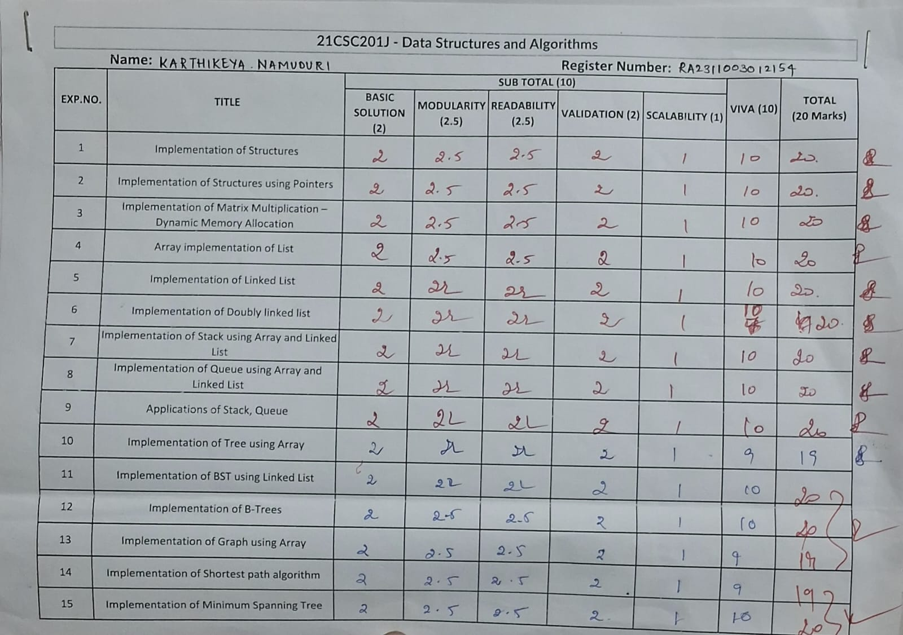
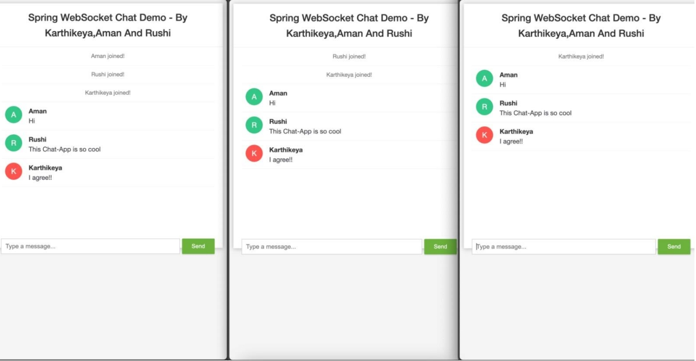
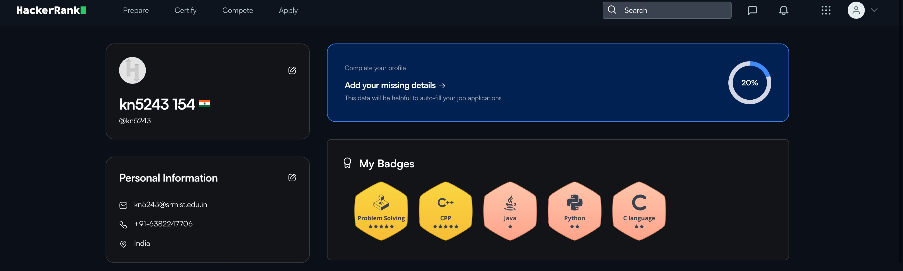
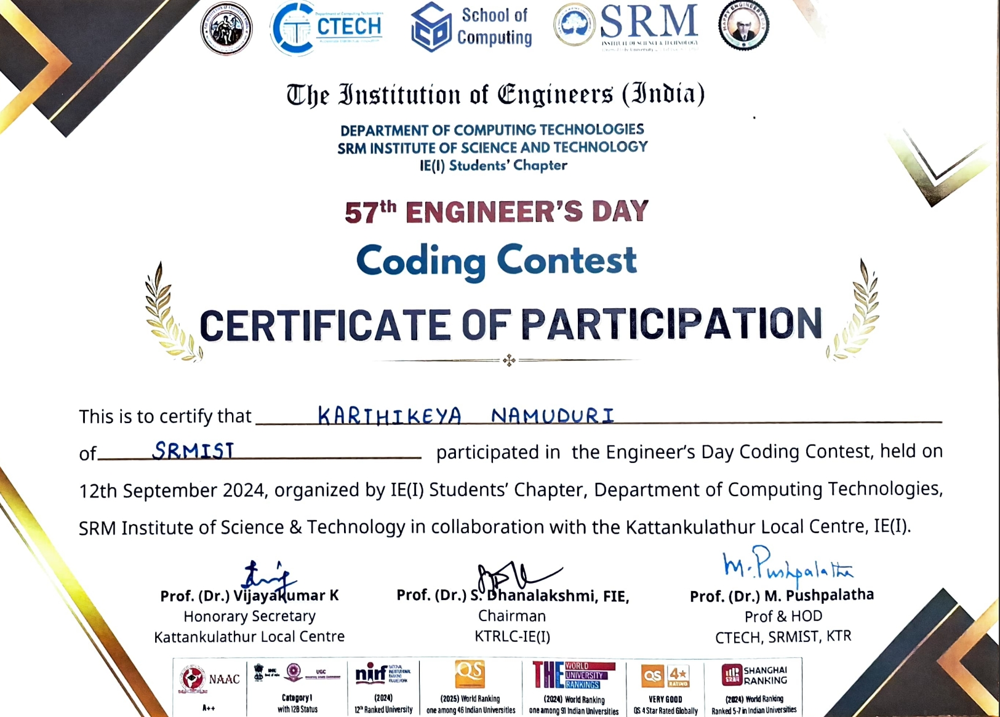
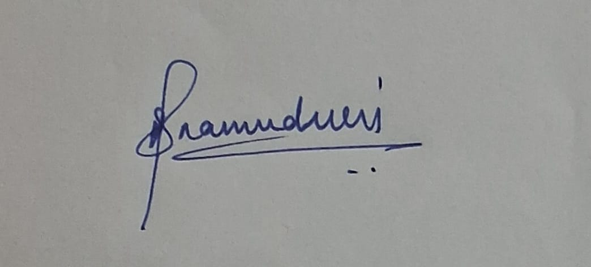

Student Portfolio
Karthikeya Namuduri

Register Number: RA2311003012154
Mail ID: kn5243@srmist.edu.in
Department: CTECH
Year / Sem / Section: 2nd/3rd/O2
Subject Title: 21CSC201J Data Structures and Algorithms
Handled By: Dr.K.Geetha
Email: kn5243@srmist.edu.in
LinkedIn: www.linkedin.com/in/namudurik
GitHub: https://github.com/namuduris
ELab Completion Status
Lab Completion Status

SOLVED REAL WORLD PROBLEM / CONCEPTUAL TASK
Made a Online Chatroom Application using Java
CERTIFICATIONS (Coursera/edX/etc.)
Include any online courses, workshops, or certifications related to Data Structures and algorithms, problem-solving
NPTEL/HOITS QUESTIONS SOLUTIONS
1.Discuss the Advantages and Disadvantages of Using Arrays.
Solution:
Some of the advantages of arrays are mentioned below:
• Code Optimization: Efficient storage and retrieval with concise code.
• Functionality: Supports algorithms for searching, sorting, etc.
• Index-Based Access: Quick element access using an index.
• Multi-Dimensional: Manages complex data structures like matrices.
• Memory Allocation: Consecutive storage minimizes overhead.
• Foundational Use: Basis for other data structures like stacks and
queues.
Some of the disadvantages of arrays are mentioned below:
• Fixed Size: Static data structure with a fixed size.
• Memory Wastage: Allocated memory may not be used efficiently.
• Insertions and Deletions: Costly operations as elements have to be
shifted.
• Data Wastage: Even if fewer elements are stored, space is allocated.
• Speed: Searching can be slow in an unsorted array.
• Overhead: Additional space is required for an index.
2.What Are the Disadvantages of Using Linked Lists?
Solution: Linked lists are a commonly used data structure in computer
science and are frequently discussed in data structure interview questions,
but like any other, they come with certain drawbacks.
Some key disadvantages include:
• Slow Access Time: Accessing elements in a linked list can be time-
consuming, as you must traverse the list to find the desired element,
an O(n) operation. This makes linked lists less suitable for scenarios
requiring quick access to elements.
• Pointers or References: Linked lists rely on pointers or references to
connect nodes, which can add complexity compared to arrays. This
complexity can make linked lists harder to understand, debug, and
maintain.
• Higher Overhead: Linked lists involve higher overhead compared to
arrays since each node requires additional memory to store a
reference to the next node.
• Cache Inefficiency: Linked lists are inefficient in terms of cache usage
because the memory is non-contiguous. As you traverse a linked
list, cache misses are more likely, resulting in slower
performance.
CODING COMPETITIONS


Signature of the Student
